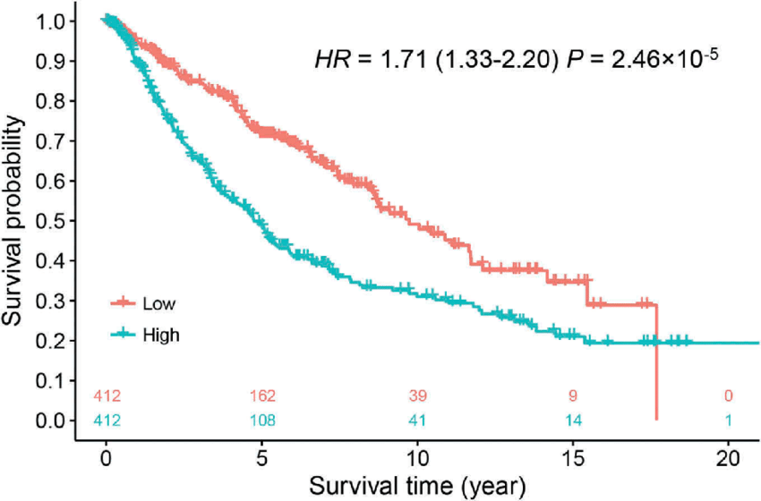

Tool for Employee Survival Analysis
Find more insight about you employee from your data.
Try For Free

Find more insight about you employee from your data.
Try For Free
WHY SURVIVAL ANALYSIS
Survival analysis is the analysis of time-to-event data. Such data describe the length of time from a time origin to “time-to-event”. Survival Curves can be applied to any “time-to-event” data such as time to hire, time to promotion, time to quit, where you want to understand what percent of a ymployee have an event occur over time.
By creating separate curves for different groups you can determine if there is a difference in behavior between the groups.
Analyzing the lead-offs in this way helps you identify factors affecting leaving. As vel as visualizing the result and drawing conclusions.
With survival analysis, you can find mistakes in recruitment process and dive deeply to analyze and find real reason of this mistakes
Using the survival curve, you can compare different employees, calculate the average stay time, both for the population and for an individual employee.
For example, you could compare: the retention ( for two different departments.Some examples are:
Median survival time of employee
Same company
Same company
We can visualaized significant difference of retention period in two different department splited by hiring age group
Collect Ideas NowUsing survival analysis method we can estimate retention period of new comer based on specific predictors.
Track Your Rankings
Median survival time of employee
Same company
Same company
Use Competitors reports to see who you’re up against
online and what their current strengths and
weaknesses are.
We can visualaized significant difference of retention period in two different department splited by hiring age group
Try with your dataUsing survival analysis method we can estimate retention period of new comer based on specific predictors.